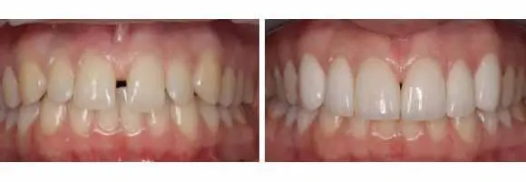
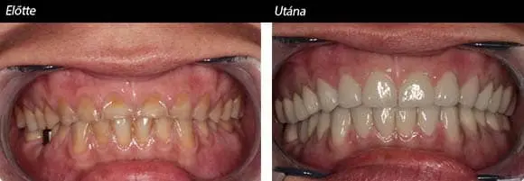
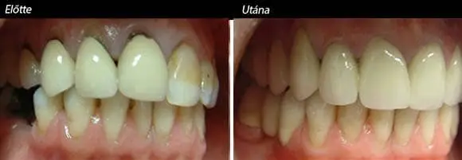
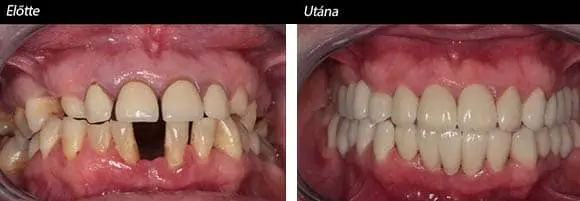
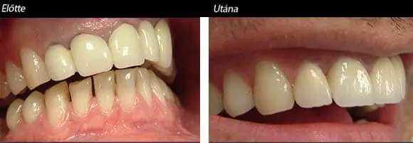
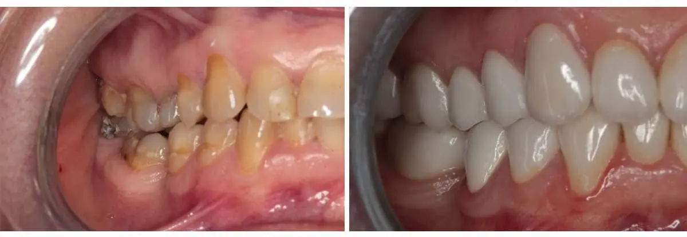
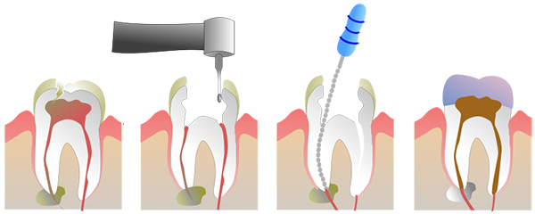
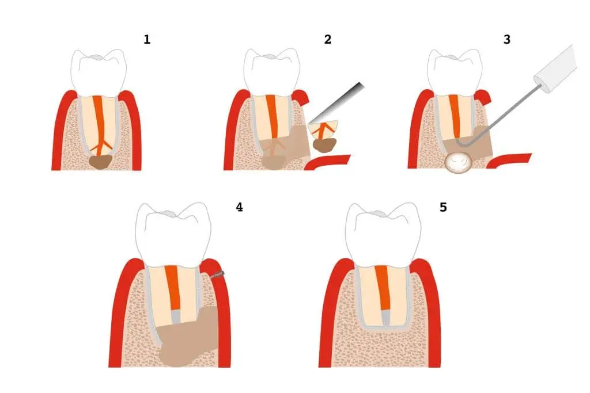

Dental Surgery

- Synuslift operation
- Bone grafting using artificial bone grafting material
- Bone grafting using bones from the hips
- Bone grafting using retro molar bone block
Bridges are commonly used to replace one or more missing teeth.
Your dentist may recommend a crown to:
How do Bridges Work? A bridge may be recommended if you're missing one or more teeth. Gaps left by missing teeth eventually cause the remaining teeth to rotate or shift into the empty spaces, resulting in a bad bite. The imbalance caused by missing teeth can also lead to gum disease and temporomandibular joint (TMJ) disorders.
Bridges are commonly used to replace one or more missing teeth. They span the space where the teeth are missing. Bridges are cemented to the natural teeth or implants surrounding the empty space. These teeth, called abutments, serve as anchors for the bridge. A replacement tooth, called a pontic, is attached to the crowns that cover the abutments.
As with crowns, you have a choice of materials for bridges. Your dentist can help you decide which to use, based on the location of the missing tooth (or teeth), its function, aesthetic considerations and cost. Porcelain or ceramic bridges can be matched to the color of your natural teeth.
Zirconium is a lustrous, grayish-white, soft, ductile, and malleable metal which is solid at room temperature, though it becomes hard and brittle at lower purities. In powder form, zirconium is highly flammable, but the solid form is far less prone to igniting. Zirconium is highly resistant to corrosion by alkalis, acids, salt water, and other agents.
Zirconium is used as an alloying agent due to its high resistance to corrosion. It is never found as a native metal, but is instead obtained mainly from the mineral zircon, which can be purified by chlorine.
The advantages of zirconium - ceramic crowns and bridges:
Composite-compomer fillings: Recently in dentistry, satisfying aesthetic requirements have become more and more important. An almost new, mixed kind of dental special field emerged, which beyond the dental defining and knowing of nice as a notion, considers its realisation an important guideline: here we list some of its tools. Applying metals for filling and substitution should be avoided. A certain type of plastic that is based on modern technology was transferred from space research to civil usage. Inorganic (glass, quartz, porcelain, silicon dioxide, etc.) granules are mixed into synthetic resin, thus a quite massive, resistant and transparent material is created. Several aesthetic filling are made of composite.
Inlay: It is applied in case of extreme big cavities. After removing decay, the dental technician prepares the missing piece of tooth with the sample taken from the amorphous tooth-remains. Onlay: A massive filling, similar to Inlay, which replaces the whole chewing-surface of the tooth, or maybe the whole chewing-corners. It can be made of composite, porcelain, gold, and golden-porcelain.
Veneers: A special kind of veneer, the porcelain veneer-technique means a glued, 0,7 mmthick ceramic sheet. It can be applied in case of filled tooth if the filling is not too big, but we apply mainly on the external surface of the frontal teeth. Its advantage is that less teeth must be ground (0.5-1 mm). We use it to correct the shape, position and colour of teeth and to reach the best aesthetic effect. This solution can be applied when there are defections deriving from developmental abnormality, discolours, or other deformities on the frontal teeth. In case of removing a small quantity of tooth-structure, we glue a very thin, veneer-like, individual ceramic-layer, which is made after an impression on the external surface of the teeth (mainly on the upper frontal teeth), which makes teeth much more aesthetic.
Root canal treatment:
Contrary to every rumour we must know, root treatment, or endodontic intervention, can be executed without pain, and what is more important, it serves tooth-keeping. When the decay goes so deep that the infection reaches the pulp, then an almost unbearable, the so-called pulpitic pain appears, usually at night, because of the tension of the gases derives from the inflammation of veins and nerves in it. Without a doubt, all of us have various experiences related to root treatment, based on either personal or our acquaintances' stories. Considering that instead of removing and replacing a tooth, we can keep our own teeth with this kind of intervention, it is reasonable to choose root treatment. Root treatment causes less unpleasantness than tooth substitution. During root treatment, after thorough anaesthetisation the dentist removes the inflamed tooth-nerves and veins, and pain also considerably decreases. After that on some occasion dentine is treated with antiseptic and medicines, and when the tooth becomes symptom free, root-filling can be done. The latter can be executed without anaesthetic. After successful root-filling the tooth must be cover-filled, usually it is worth protecting it with a crown.
When a tooth cannot be kept, it must be extracted. For a quick recovery, some advice must be followed:
The wisdom tooth
Their removal: The removal of wisdom teeth which could not break through is a surgical intervention. However, it can be carried out in a painless way with local anaesthesia. There can be tumescenes and a partial trismus. Then it is useful to have a rest for some days. It is possible to remove more wisdom teeth together with general anaesthesia. Causes of problems: Due to lack of space, the whole dentition may pile up towards the centre line. Piling up dentition can cause many other disadvantages besides aesthetic spectacle. A wisdom tooth which could not break through the bone may cause cyst in the jawbone or serious inflammation, because scraps stuck in the pocket between the tooth and the gum may cause bacterial inflammation. Besides this, such pockets spoil oral hygiene and can be a reason for bad breath.
Such intervention is necessary when for example there is a chronic inflammation around the root-tip, or such pulp, which can not be treated with root-filling for some reasons, or if the root-tip of the tooth reaches into the cyst-cavity of the jawbone and the doctor decides to keep the tooth. After the intervention the treated area slightly swells up, it is useful to have a rest for a day or two. Some analgesic or cold compress may also be needed.
